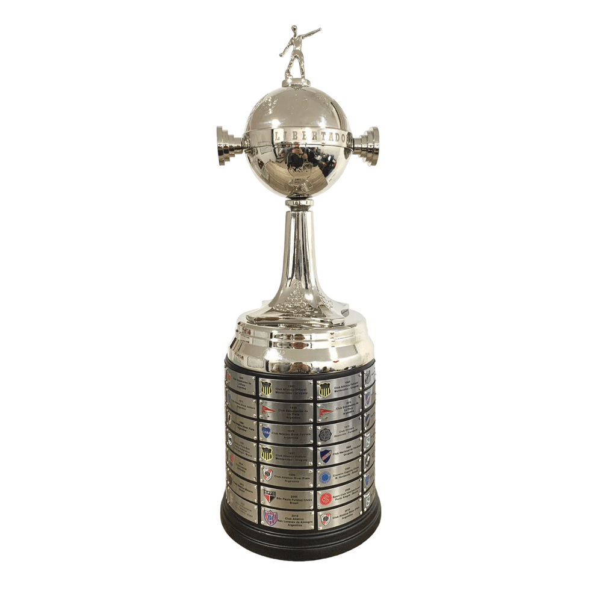

Historia do Time
O Sport Club Corinthians Paulista, comumente referido como Corinthians, é um clube poliesportivo brasileiro da cidade de São Paulo, capital do estado de São Paulo. Foi fundado como uma equipe de futebol no dia 1 de setembro de 1910 por um grupo de operários do bairro Bom Retiro. Seu nome foi inspirado no Corinthian FC de Londres, que excursionava pelo Brasil. Embora tenha atuado em outras modalidades esportivas ao longo dos anos, seu reconhecimento e suas principais conquistas foram alcançados no futebol.[6] O clube é um dos mais bem sucedidos do Brasil e das Américas nos últimos anos.[7] É o terceiro maior campeão nacional, com onze conquistas, ficando atrás somente do Palmeiras (17 conquistas) e Flamengo (14 conquistas). Conquistou dois Mundiais de Clubes da FIFA,[8] uma Copa Libertadores da América de forma invicta, uma Recopa Sul-Americana, sete Campeonatos Brasileiros,[9] três Copas do Brasil,[10] uma Supercopa do Brasil, cinco Torneios Rio-São Paulo (recordista, ao lado de Palmeiras e Santos), 30 Campeonatos Paulistas (atual recordista) e uma Copa Bandeirantes (único vencedor)..
Suas cores tradicionais são o branco e o preto. Desde 2014, manda suas partidas de futebol na Neo Química Arena. Seus rivais históricos são o Palmeiras, com quem disputa o Derby Paulista; o São Paulo, com quem disputa o Majestoso; e o Santos, com quem disputa o Clássico Alvinegro. Sua torcida é conhecida como "Fiel"[11] e seus torcedores são estimados em aproximadamente 30 milhões espalhados por todo o Brasil e pelo mundo, atrás nacionalmente somente do carioca Flamengo.[12][13] a sua torcida é considerada também uma das maiores torcidas do mundo.[14][15] De modalidades esportivas importantes ao longo da história corintiana,[16] destacam-se o basquete, onde o clube desfrutou de relativo sucesso, especialmente durante as décadas de 1950 e 1960, com a conquista de títulos paulistas, brasileiros e até sul-americanos, a natação que rendeu quatro conquistas do Troféu Brasil de Natação, atual Troféu Maria Lenk, e o futsal, a partir da década de 1970, que rendeu conquistas em torneios estaduais e nacionais. A influência do remo na história do clube modificou o escudo original, que aludia meramente ao futebol, com o acréscimo do par de remos e da âncora como aparecem até os dias de hoje.[17]
- 